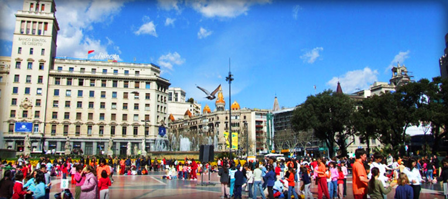
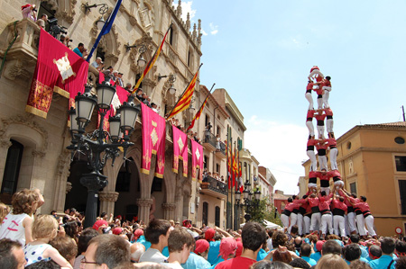
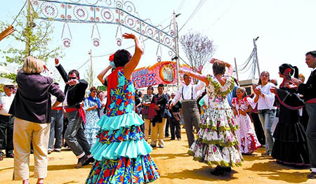
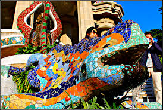

Barcelona

Culture
Barcelona, city, seaport, and capital of Barcelona provincia (province) and of Catalonia comunidad autónoma (autonomous community), northeastern Spain, located 90 miles (150 km) south of the French border. It is Spain’s major Mediterranean port and commercial centre and is famed for its individuality, cultural interest, and physical beauty.
Barcelona.
Overview of Barcelona, Spain.
Barcelona.
Jupiterimages
Overview of Barcelona, Spain.
Contunico © ZDF Enterprises GmbH, Mainz
On his visit to the city in 1862, Hans Christian Andersen remarked that Barcelona was the “Paris of Spain.” The city is indeed a major cultural centre with a remarkable history. It abounds with archives, libraries, museums, and buildings of interest, featuring superb examples of Modernist and Art Nouveau decor and architecture. Since the late 1970s, with the official recognition of the Catalan language and the granting of significant levels of regional self-government, cultural life has been revitalized, bringing with it a new awareness of the depth and variety of Catalan culture. This vitality combines with the striking physical setting of Barcelona—between scenic mountains and the Mediterranean Sea, with a benign climate that fosters street life—and its significance as an economic power and a major port to create a city of infinite variety. Area city, 38 square miles (98 square km); metropolitan area, 1,249 square miles (3,235 square km). Pop. (2011) 1,611,013.




click here to findout more about barcelona